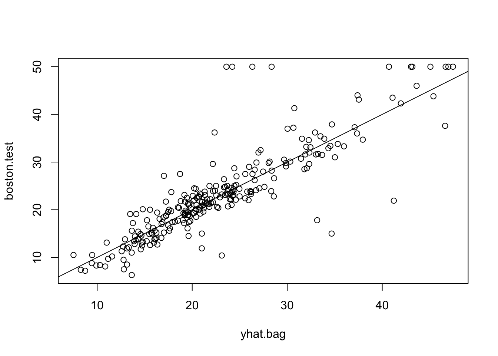
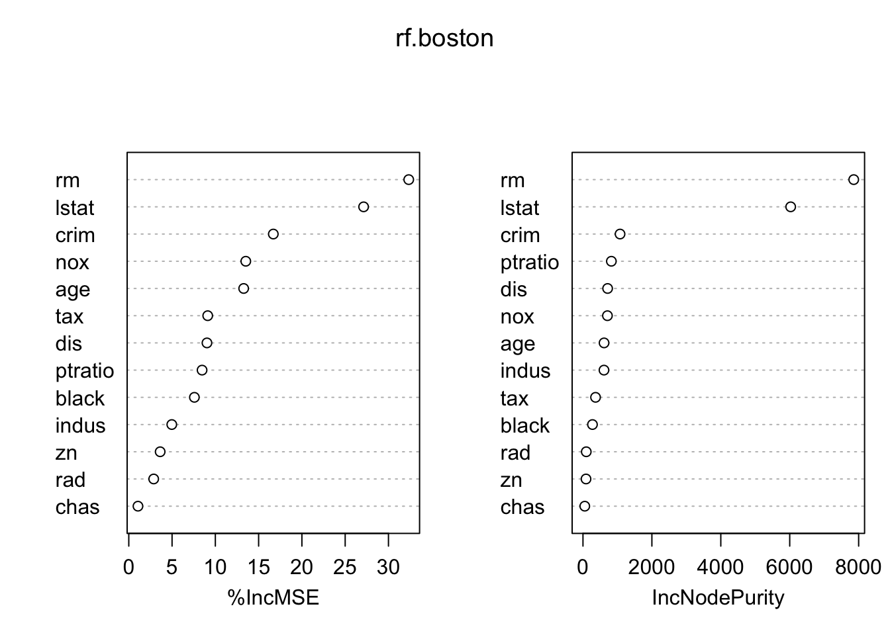

library(randomForest)单个树的回归模型结果易于解释, 但预测能力一般不如线性模型 (如LASSO和Ridge Regression). 为了提高预测能力, 我们可以多种一些树, 典型例子是随机森林 (random forest) 和提升法 (boosting).
下面我们演示随机森林方法. 在实践中, 随机森林的预测能力往往优于 LASSO, 随机森林也是金融中使用最广泛的监督学习方法之一.
library(randomForest)library(MASS) #for Boston dataset
set.seed(1)随机森林方法是针对 Bagging 方法的改进: 在 Bagging 中, 每次种树时默认使用所有 p 个预测变量; 在随机森林中, 每次种树最多用到 m < p个变量. 因此, 你可以将 Bagging 法视作随机森林的特例.
对于 Boston 数据集, p = 12. 因此, 如果我们指定种树时的参数个数为 12 (mtry = 12), 得到的就是 Bagging 方法的结果.
train <- sample(1:nrow(Boston), nrow(Boston)/2)
boston.test <- Boston[-train, "medv"]bag.boston = randomForest(
medv ~ ., data = Boston,
subset = train, mtry = 12,
importance = TRUE)
bag.boston
Call:
randomForest(formula = medv ~ ., data = Boston, mtry = 12, importance = TRUE, subset = train)
Type of random forest: regression
Number of trees: 500
No. of variables tried at each split: 12
Mean of squared residuals: 10.99681
% Var explained: 85.69yhat.bag = predict(bag.boston, newdata = Boston[-train, ])
plot(yhat.bag, boston.test)
abline(0, 1)
计算测试集上的 MSE:
mean((yhat.bag - boston.test)^2)[1] 23.04225Bagging 法的测试集 MSE 约为 23.04, 我们在上一个统计学实验中, 用单个树模型得到的 MSE 约为 28.02. Bagging 法将预测精度提高了约 18%.
作为对比, 使用同样的训练集和测试集时, 使用 LASSO 法得到的测试集 MSE 约为: 26.90.
library(glmnet)x <- model.matrix(medv ~ ., Boston)[, -1]
y <- Boston$medv
y.test = y[-train]
lasso.mod <- glmnet(x[train, ], y[train], alpha = 1,)
cv.out <- cv.glmnet(x[train, ], y[train], alpha = 1)
lasso.pred =
predict(
lasso.mod, s = cv.out$lambda.min,
newx = x[-train, ])
mean((lasso.pred - y.test)^2)[1] 26.90183使用随机森林方法, 只需修改函数 randomForest 的参数 mtry. 下面我们设定每次种树时, 随机选择 mtry=6 个参数:
set.seed(1)
rf.boston <- randomForest(medv ~ ., data = Boston,
subset = train, mtry = 6, importance = TRUE)
yhat.rf <- predict(rf.boston, newdata = Boston[-train, ])
mean((yhat.rf - boston.test)^2)[1] 19.62021相比 Bagging 方法, 随机森林的预测精度提升了约 14.8%.
相比于单个回归树的模型, 随机森林模型提高了预测精度, 但回归结果也变得难以解释.
函数 importance 可以刻画随机森林模型中每个预测变量的重要程度:
importance(rf.boston) %IncMSE IncNodePurity
crim 16.697017 1076.08786
zn 3.625784 88.35342
indus 4.968621 609.53356
chas 1.061432 52.21793
nox 13.518179 709.87339
rm 32.343305 7857.65451
age 13.272498 612.21424
dis 9.032477 714.94674
rad 2.878434 95.80598
tax 9.118801 364.92479
ptratio 8.467062 823.93341
black 7.579482 275.62272
lstat 27.129817 6027.63740importance 返回了两种关于变量重要性的度量:
第一种度量基于袋外样本 (out-of-bag samples) 预测精度的下降.
第二种度量基于 “节点杂质度” (node impurity) 的下降. 对于回归树模型，节点杂质度取决于训练集上的 RSS.
varImpPlot() 函数可视化了这两种度量:
varImpPlot(rf.boston)
lstat) 和房屋的房间数 (rm) 是决定房价最重要的因素.